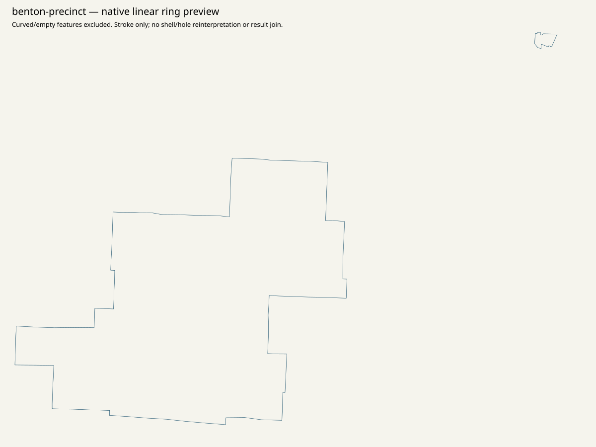
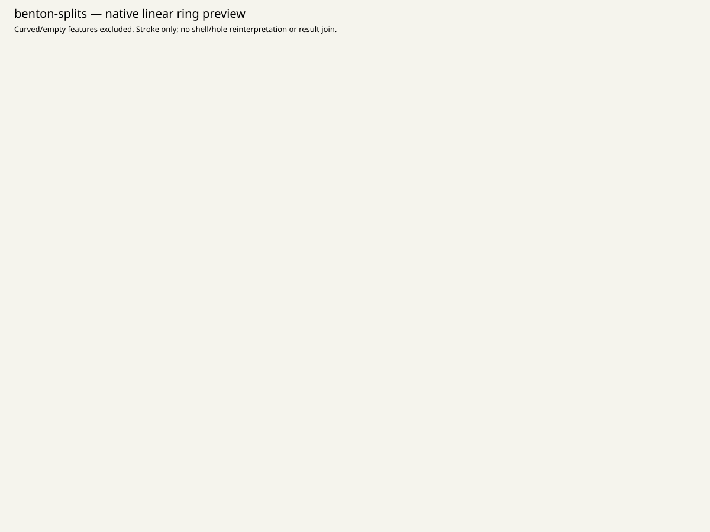

Canonical statewide native order / top15 / minimum80 / priority / remainder: NULL. All36 parents remain in scope. Geographic assets are qualified evidence; no result-leaf polygon joins or spatial vote, ballot or registration allocation.
Records & Elections links Voter Data & Election Maps, the complete April 2024 county precinct/split PDF, January 2026 precinct/split lists, and the public election app. App -> webmap -> ElectionBoundaries service yields 21 precinct features, 19 curved, and 66 split records with all attributes but no returned geometry. WKT and all original coordinates remain exact. These scopes cannot close the unavailable 2024 result-native universe.
{
"CRS": "Per-service complete native spatialReference and per-SHP original PRJ retained. PDF CRS unknown unless explicitly printed; no CRS inferred from appearance.",
"access": "Every retained attempt/status/error and captured source clock is in linked receipts. Records & Elections links Voter Data & Election Maps, the complete April 2024 county precinct/split PDF, January 2026 precinct/split lists, and the public election app. App -> webmap -> ElectionBoundaries service yields 21 precinct features, 19 curved, and 66 split records with all attributes but no returned geometry. WKT and all original coordinates remain exact. These scopes cannot close the unavailable 2024 result-native universe.",
"finer_ID": "No source row number/name/count/FIPS/shape used as a finer/current result-ID join. Native GIS IDs are retrieval/attribute evidence only.",
"legal": "No approved November2026 legal precinct outline/crosswalk. County2010 outlines and source ring diagnostics do not establish current legal gaps/overlaps/slivers.",
"native_result_membership": "Unknown2024native membership retained; unavailable parent is not a synthetic native unit.",
"physical": "No precinct-to-physical-polling-site crosswalk established. Office, drop box, municipality, ward and ballot style are separate scopes.",
"vintage": "Resource-specific source publication labels/metadata; historical2010 county context is explicitly separate. No same-vintage result/legal approval."
}{
"county": "Benton",
"county_fips": "41003",
"county_key": "OR:county:41003",
"county_presidential_reported_votes": 50232,
"county_presidential_named_votes": 49835,
"county_source_Misc": 397,
"native_priority_status": "unavailable_not_acquired_in_bounded_pass",
"native_reporting_unit_count": null,
"source_native_constituents": [],
"source_administrative_presentations": [],
"unknown_native_membership": true,
"approved_current_election": false,
"approved_current_geometry": false,
"historical_originals": [
{
"year": 2020,
"source_key": "2020-01",
"member_name": "11.03.20/Benton.pdf",
"archive_source_id": "sos-2020-precinct-zip-observed-download",
"original_sha256": "5a333a3140eeac44a07b47c9030c1f8d12fc823d0fc53f644d63613e43849360",
"original_bytes": 343432,
"candidate_native_extraction_status": "see native/county-reconciliation.json; incomplete groups remain explicit"
},
{
"year": 2022,
"source_key": "2022-01",
"member_name": "Benton.pdf",
"archive_source_id": "sos-2022-precinct-zip-observed-download",
"original_sha256": "d49cacf95608092af614bb87a8c7a8fa956f04d5b90026cc01ae10176fa84abc",
"original_bytes": 958076,
"candidate_native_extraction_status": "see native/county-reconciliation.json; incomplete groups remain explicit"
}
]
}{
"full_object_semantic_sha256": "522ead2af49be967c15acf70e7a342641abe6c2119abe96a4ab9537302988504",
"pointer": "/all_36_county_parents/1",
"whole_file": {
"bytes": 891659,
"path": "data/turnout/priority-set.json",
"sha256": "06faf77e374172fadabf9b99d5acfd64a5658ccf76e1b4310602bca4274f9add"
}
}Complete snapshot/metadata/page inventory
{'curved_excluded_whole_feature': 19, 'linear_features': 2, 'nonsimple_closed_rings': 0, 'open_rings': 0, 'short_rings': 0}

Complete snapshot/metadata/page inventory
{'null_or_empty_excluded': 66}

Complete snapshot/metadata/page inventory
{'linear_features': 36, 'nonsimple_closed_rings': 0, 'open_rings': 0, 'short_rings': 0}

Unknown native membership is retained as one unavailable parent case; it is not a native result row.